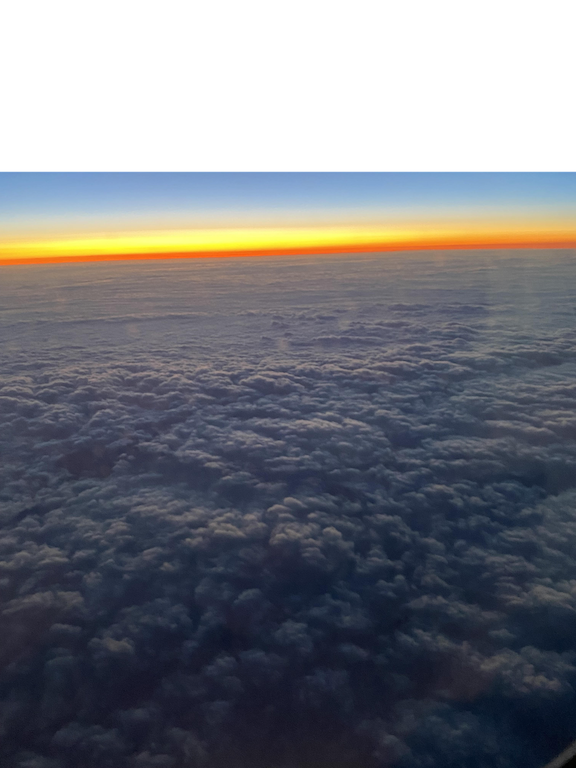

Brayden Woo
Brayden Woo was born in Framingham, Massachusetts, and has lived a town over in Natick for all of his life. He completed his primary schooling at Natick High School in the spring of 2022, and is currently projected to graduate from the University of Massachusetts Amherst in the spring of 2026. An avid reader for most of his life, Brayden has pursued a degree in English, and is considering looking to the editing/publishing industry for a future career. This site presents some of the writing he has done at UMass.
